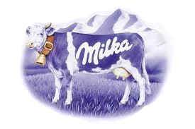

Milka
Vrsta čokolade koju ljudi bez greške mogu prepoznati i koja je svjetski poznata je uistinu Milka.
Marka je pod vlasništvom tvrtke Kraft Foods, koja je osnovana godine 1923. od strane Thomas H. McInnerney-a, čija je prvobitna svrha bila spojiti male tvrtke sladoledne industrije SAD-a. U konačnici se sama tvrtka proširila, te nudila širok asortiman mliječnih proizvoda. Kroz daljnja pripajanja i udruživanja, trži sa markama u preko 170 zemalja. Neke od tih marki su Jacobs, Cadbury, Maxwell House, Nabisco, Philadelphia, a među njima i Milka. Doduše, tvrtka koja je prva proizvela Milk-u je bila Suchard, u ranom 20-om stoljeću.
Prema službenoj stranici marke, ime Milka potječe od kombinacije dvaju riječi, Milch i Kakao, što u prijevodu s njemaškog znači mlijeko i kakao.
Širok spektar proizvoda ove marke je nadaleko poznat, stoga evo nekoliko vrsta: Milka Alpine Milk Chocolate, Milka White Chocolate, Milka Haselnut Chocolate, Milka Whole Nuts Chocolate, Milka Luflee, Milka M-Joy, Milka Pralines, Milka Nougat Chocolate i još mnogo.
Detaljnije informacije mogu se naći na web-stranici Milk-e